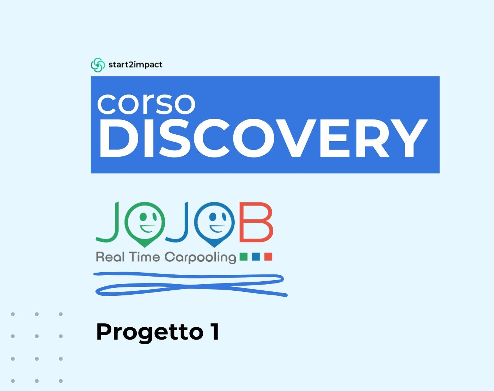
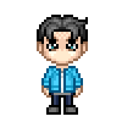

Hi! I'm Giuseppe
Web Designer & UX/UI Student: Crafting engaging web experiences with a user-centric approach.

Web Designer & UX/UI Student: Crafting engaging web experiences with a user-centric approach.

A beginner UX/UI Designer and Web Designer
My studies in design started when I was 16, in High School. Since then it was a steady growth: Web Design first and then UX/UI Design, extending my knowledge in my room.
Since I was a child, my world has been a mix of colors, stories and images. I've always found myself daydreaming about the fantastic worlds of cinema and video games, in which every visual detail tells something profound and every stylistic choice has an impact. This love for visual storytelling, which was all around me in every form, became the engine that made me who i am today and infleunced me as a designer.
When I'm not designing, you might find me exploring new games, looking for inspiration or maybe analyzing the visual storytelling of my favorite films.
Analisi UX condotta su JojobRT, piattaforma dedicata al carpooling aziendale. Il progetto è stato sviluppato nella fase Discovery del percorso UX/UI Design di Start2Impact. L’obiettivo era valutare e migliorare l’esperienza utente attraverso una ricerca strutturata e metodi qualitativi e quantitativi.
Comprendere e valutare criticamente l’esperienza attuale offerta da JojobRT. La sfida principale è stata individuare punti critici nell’usabilità del sito e comprendere i reali bisogni degli utenti, al fine di proporre miglioramenti fondati su dati e osservazioni concrete.
La ricerca ha seguito un processo sistematico di analisi, articolato in più fasi:
Seconda fase dell’analisi UX condotta su JojobRT, piattaforma di carpooling aziendale. Il progetto si inserisce nel percorso UX/UI Design di Start2Impact e ha avuto l’obiettivo di approfondire la conoscenza degli utenti e riprogettare la struttura del sito a partire da evidenze emerse nella ricerca.
Tradurre gli insight ottenuti dalla fase di ricerca in proposte concrete di miglioramento dell’esperienza utente. La sfida principale è stata rappresentare in modo realistico i diversi profili utente e intervenire sulla struttura del sito in maniera efficace e orientata ai bisogni reali.
Il lavoro si è articolato in diverse fasi strategiche:
A website designed as a personal portfolio, developed as part of the UX/UI Design course by Start2Impact. The goal was to create a professional digital space to showcase my projects, design process, and personal brand.
Building a portfolio that not only reflects my design skills but also demonstrates a clear and thoughtful user experience. I aimed to balance creativity with functionality, making the site visually engaging while ensuring usability across devices.
The project followed a structured design process:

As part of the UX/UI Design course at Start2Impact, I completed a copywriting project that involved writing an article on the topic of fast fashion for the blog "Il Vestito Verde", a project focused on ethical fashion.
The challenge was to create an informative, persuasive, and engaging article that raises awareness about the environmental and social impacts of fast fashion—while aligning with the tone and values of the hosting blog.
I applied copywriting techniques learned during the course to structure and shape the article:
Brand identity development for a meditation app designed to evoke calm, balance, and inner connection. The project included logo creation, the definition of a consistent font and color palette, and a custom icon set for the app’s UI.
Visually translating concepts like serenity, mindfulness, and wellness into a distinctive and memorable brand identity. The client wanted to avoid clichés and stand out from typical meditation apps with something more authentic and refined.
I started with research into wellness aesthetics and the visual preferences of the target audience. My design decisions included:
As an introductory project for the UX/UI Design course at Start2Impact, I analyzed the landing page of the website Last Minute Sotto Casa, a platform aimed at reducing food waste by promoting local offers.
The task was to identify usability issues and improvement opportunities in the current landing page while maintaining the original mission and goals of the platform.
I carried out a UX analysis focusing on:
Development of a fully responsive website as part of the final project for a Web Design course. The focus was on front-end development using HTML, CSS, and JavaScript, aiming to create a functional and adaptable user experience across devices.
Building a responsive site structure from scratch while prioritizing clean code, cross-browser compatibility, and interactive elements. The goal was to demonstrate technical proficiency rather than visual design, working with minimal stylistic guidelines.
I started by planning the site layout with a mobile-first strategy and structured the codebase for responsiveness. Key development decisions included:
Exhibition design and visual identity for a museum show dedicated to Johannes Gutenberg, inventor of the movable-type printing press. This project was developed as part of my final high school exam. It included the creation of the exhibition’s visual identity, layout of the display panels, and design of printed materials such as posters and captions.
Conveying the historical impact of Gutenberg’s invention in a way that is both engaging and educational. The goal was to highlight the revolutionary nature of the printing press while maintaining visual coherence and accessibility for a broad audience.
I began researching into 15th-century typography, early printed books, and the cultural context of the invention. My design choices included: